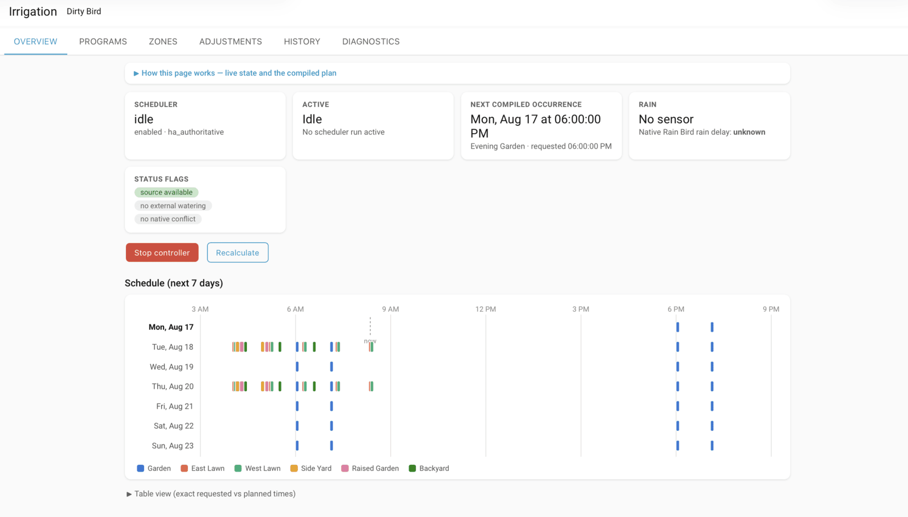

RB
Rain Bird Scheduler
Plan watering in Home Assistant, one zone at a time, with schedules, Cycle+Soak, and visible runtime adjustments.
Installation guidePre-release. The project README reports that validation against real LNK/LNK2 controllers is still pending.
- System
- Home Assistant 2026.2+
- Controller
- Supported Rain Bird LNK / LNK2
- Requires
- Configured core Rain Bird integration
- Install
- HACS custom integration or manual copy
One start time. Three zones.
Example plan for a requested 9:00 AM start, with five-second gaps between zones.
- Front lawn9:00:00–9:12:00
- Side lawn9:12:05–9:20:05
- Back lawn9:20:10–9:35:10
About
A watering plan you can inspect.
Choose watering days, start times, zone order, and minutes per zone. Rain Bird Scheduler turns those choices into a non-overlapping plan and shows requested, planned, and observed runs in Home Assistant.
- SchedulesWeekdays, odd/even days, every-N-days, multiple starts, and sunrise or sunset offsets.
- Cycle+SoakSplit watering into shorter cycles with time to soak between them. Soil and slope suggestions remain editable.
- AdjustmentsUse manual percentages, monthly or seasonal curves, or Home Assistant entities, with the calculation shown.
- WeatherConfigure rain handling and a temperature-based freeze guard, with reasons for skipped or interrupted watering.
Screen
See the week’s watering at a glance.
The Irrigation panel brings together the upcoming plan, current controller state, zone settings, runtime adjustments, and run history.

Install
Add it to Home Assistant.
- Set up your supported controller with Home Assistant’s core Rain Bird integration first.
- In HACS, open Custom repositories. Add jgassens/RainBirdScheduler with category Integration.
- Install Rain Bird Scheduler and restart Home Assistant.
- Go to Settings → Devices & Services → Add integration → Rain Bird Scheduler. Select your controller, choose which system manages its schedules, and review the native-schedule conflict warning.
For manual installation, follow the repository instructions. This is a Home Assistant integration, not a Mac app.
Support
Compare the plan with what ran.
Use the run history and diagnostics when reporting an issue. The scheduler works through Home Assistant’s existing Rain Bird integration; it does not establish a separate controller connection.
- IncludeHome Assistant and scheduler versions, controller model, requested schedule, observed behavior, and redacted diagnostics.
- CheckCore Rain Bird connectivity, rain delay, scheduler status, and any onboard schedule conflict.
- ReportOpen a GitHub issue after removing passwords, tokens, and private configuration.
This project is not affiliated with or endorsed by Rain Bird Corporation.